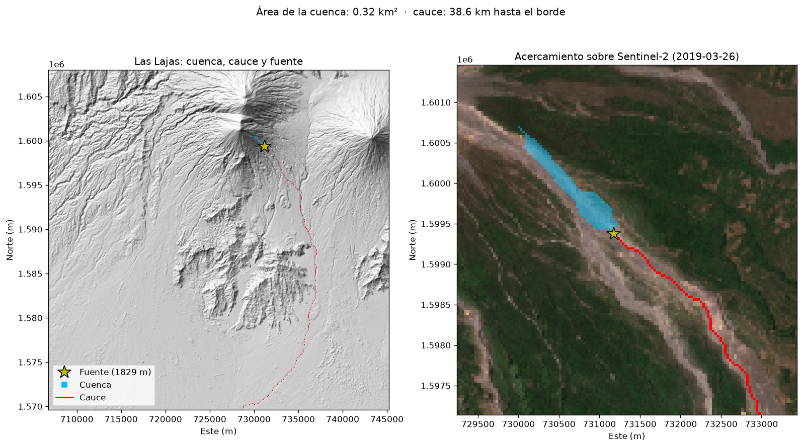
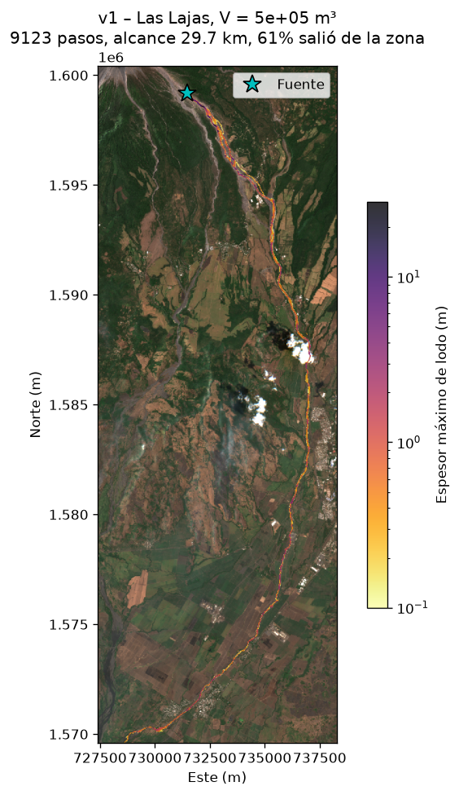
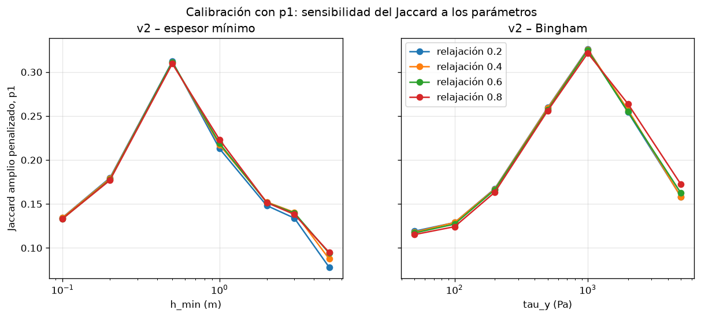
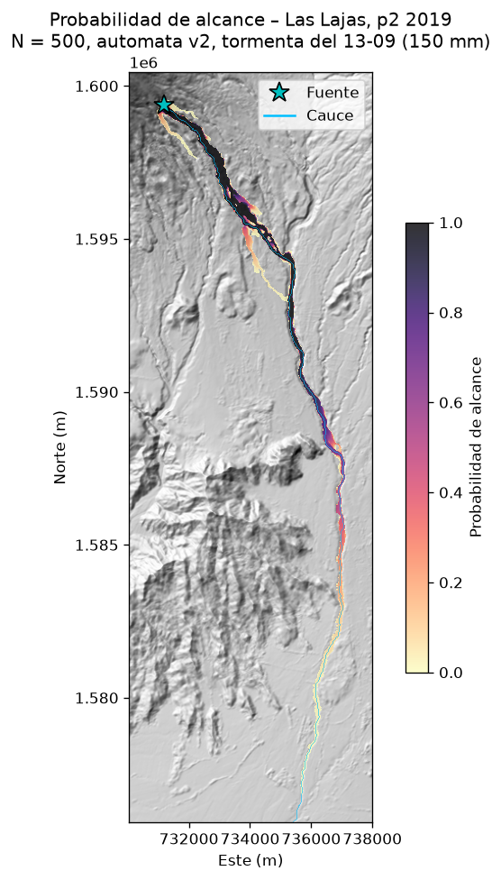
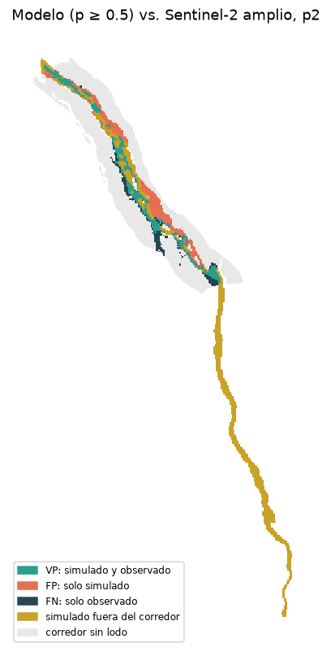

Simulación probabilística con autómata celular y Monte Carlo · Volcán de Fuego
Leonardo Mejía – 23648 · María José Girón – 23559
Isabella Obando – 23074 · Anthony Lou – 23410
CC2017 Modelación y Simulación · Universidad del Valle de Guatemala · noviembre 2026
Pregunta: con la lluvia observada en un periodo, ¿qué zonas alcanza un lahar y con qué probabilidad?

El alcance depende del terreno, del volumen y de la resistencia del lodo. Los dos últimos son inciertos, así que una sola simulación daría falsa certeza: buscamos un mapa de probabilidad.
| p1 | p2 | |
|---|---|---|
| Tormenta mayor | 61 mm | 150 mm |
| Fecha | 12 jun | 13 sep |
| Volumen (rango) | 0.3–1.7 × 10⁶ m³ | 0.8–4.1 × 10⁶ m³ |

| Versión | Qué pasó | Qué cambiamos |
|---|---|---|
| v1.0 | La fuente estaba al otro lado de una divisoria | Ubicarla con el DEM |
| v1.2 | Recorre 29.7 km: se comporta como agua | Agregar resistencia (v2) |
| v2.0 | Se atascaba a 2.5 km en hoyos del DSM | DEM sin hoyos |
| v2.2 | Ganaba la resistencia más baja | Volumen de toda la barranca y validar solo en Las Lajas |
| v2.4 | Calibración final: τy = 1000 Pa | Monte Carlo (v3) |
| Periodo de prueba (p2) | Alcance | Jaccard penalizado | Fuera del corredor |
|---|---|---|---|
| v1 sin resistencia | 38.6 km | 0.11 | 80 % |
| v2 con Bingham | 14.1 km | 0.23 | 54 % |

Cada corrida sortea 5 parámetros uniformes: escurrimiento C, sedimento Cs, factor de lluvia, relajación y τy (± 30 % de lo calibrado).
corridas por periodo
con P ≥ 0.5 en p2
diferencia máxima N vs N/2
Con N = 500 el mapa ya no cambia: converge.

| Mapa P ≥ 0.5 vs Sentinel-2 | p1 calibración | p2 prueba |
|---|---|---|
| F1 | 0.63 | 0.61 |
| Sensibilidad | 0.61 | 0.71 |
| Precisión | 0.67 | 0.53 |

github.com/anthonylouschwank/Proyecto-Modelacion